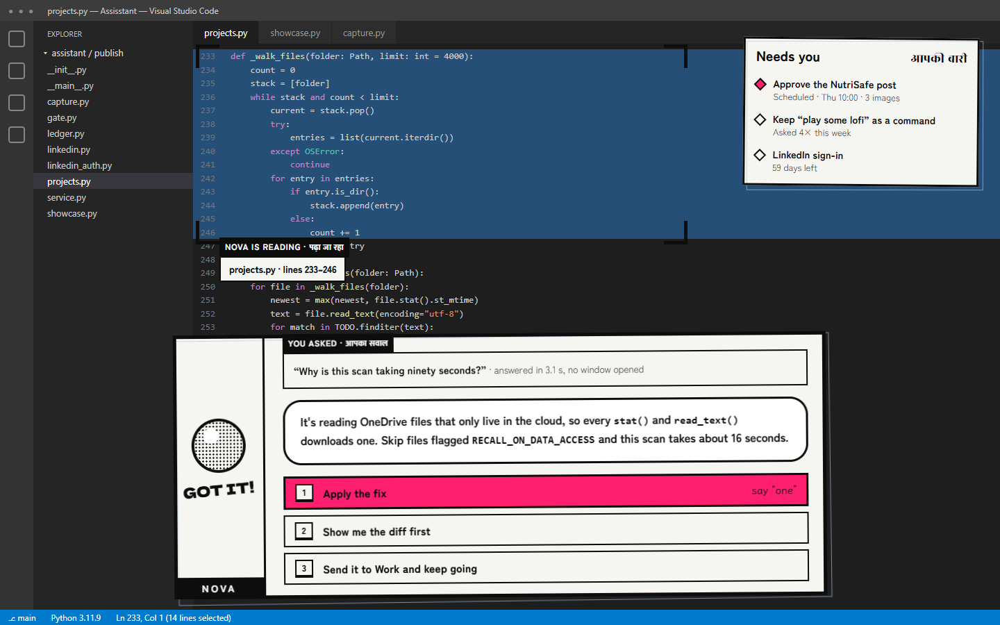
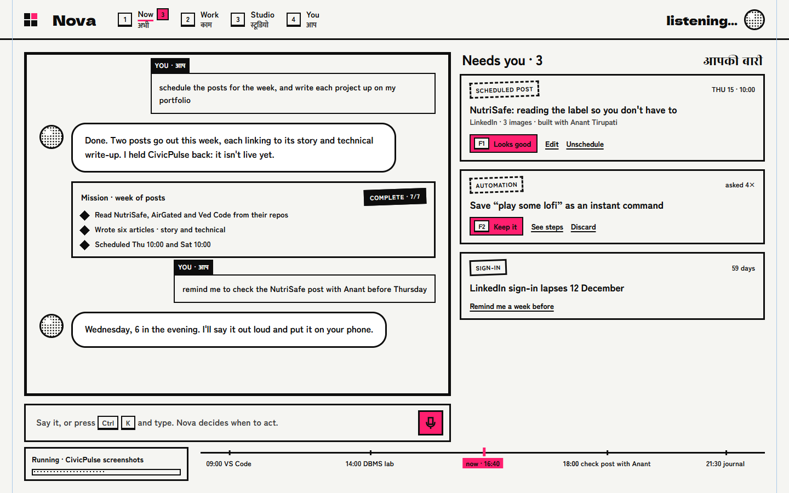
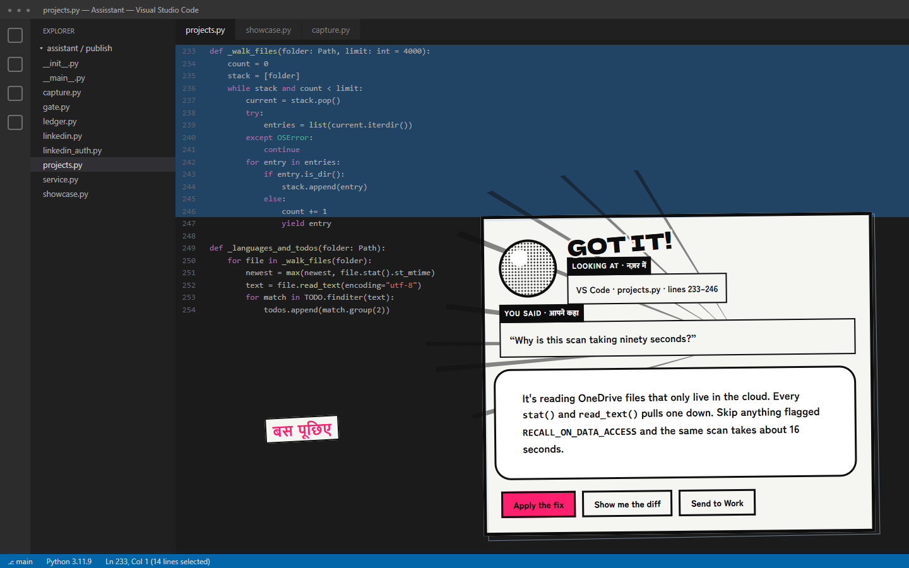
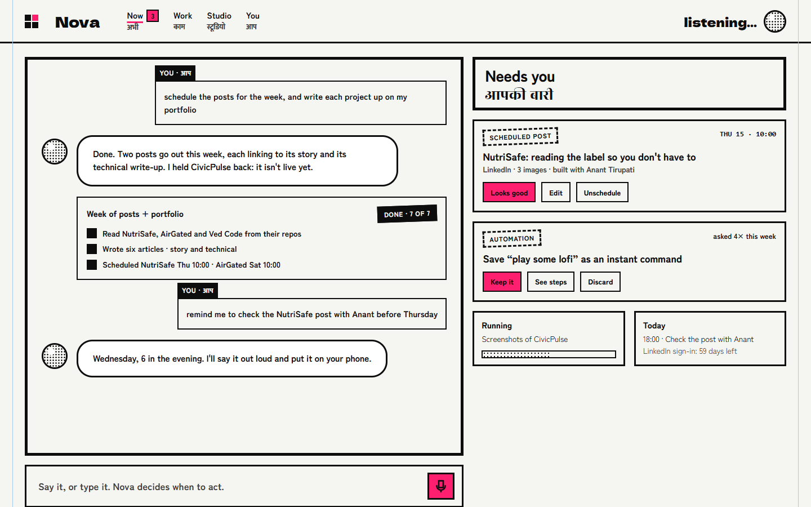
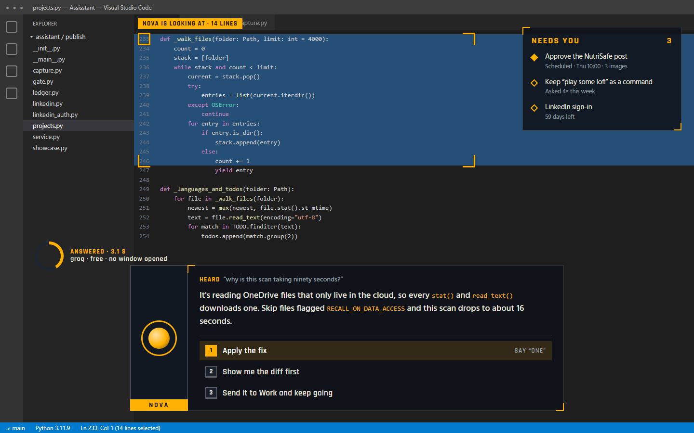
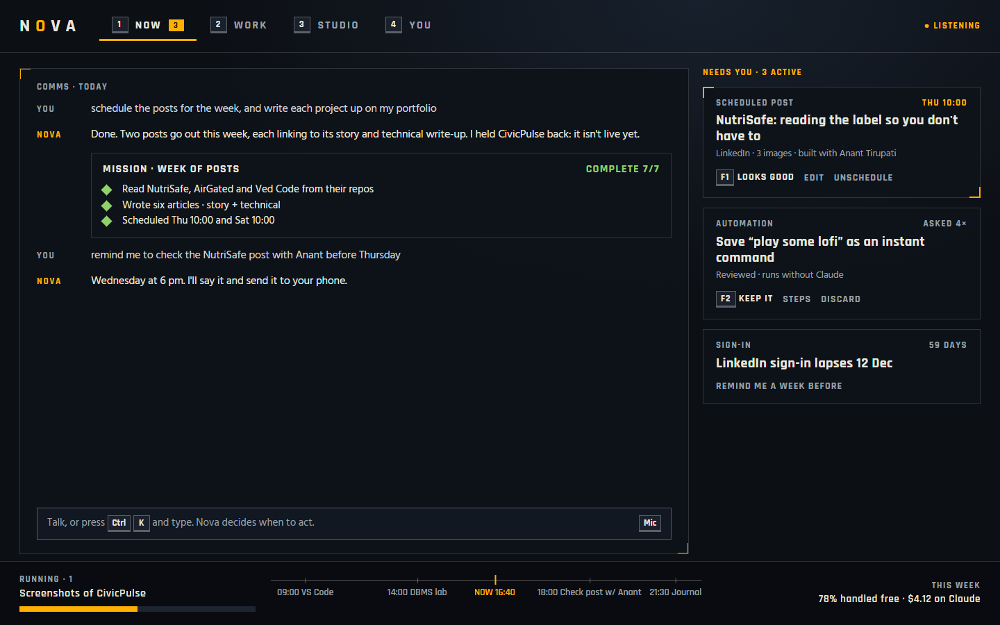
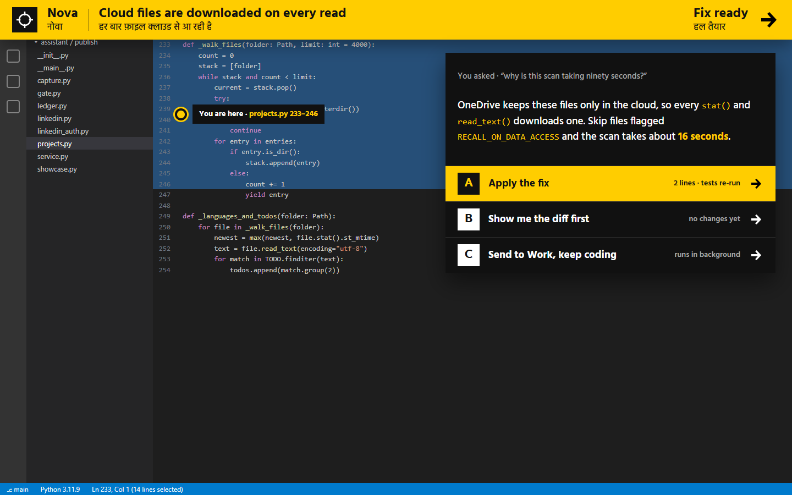
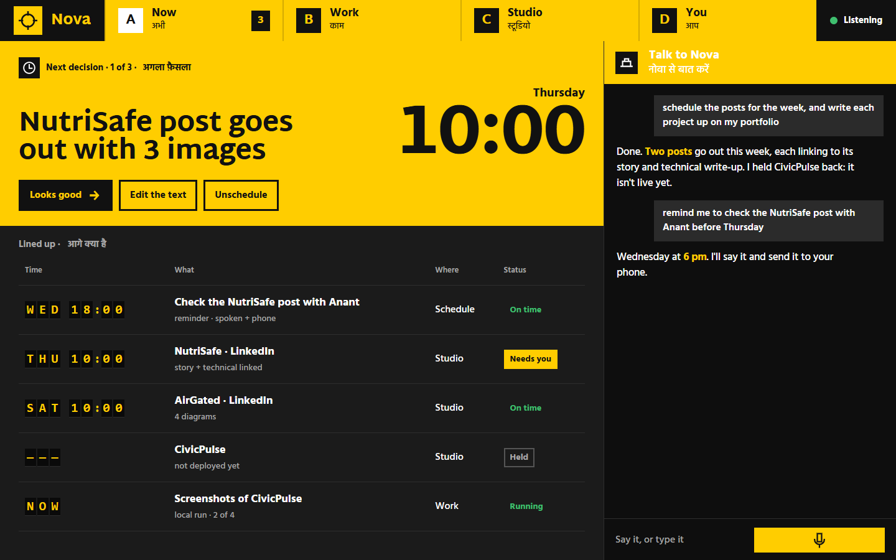
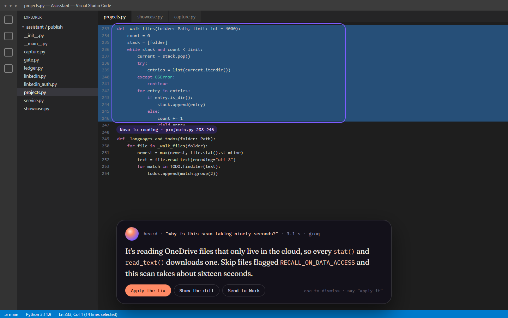
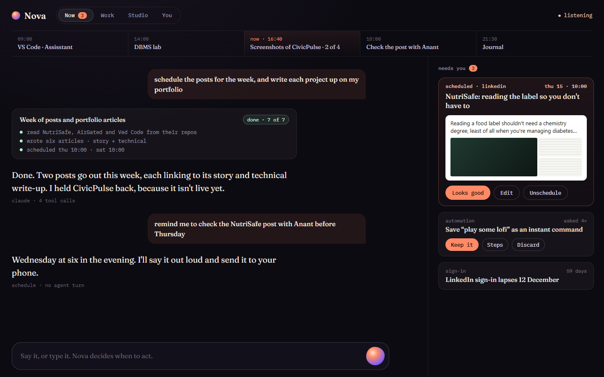

Nova: four directions
Same content in all four: you're in VS Code and ask “why is this scan taking ninety seconds?” (the real OneDrive bug from today), and the canvas's Now space with your real Needs-you items. Open each to switch between the two views. Pick one, mix parts, or ask for another round.
E · Manga × HUD
Your choiceA's world owns the page: paper, ink, speech balloons, SFX state, bilingual labels. B supplies the mechanics: ink brackets lock onto exactly what Nova read, the answer ends in numbered choices you can say, Needs you is a quest tracker with F-keys, spaces are keys 1–4, and today runs as an inked timeline.
- Signature moment
- The brackets wipe onto the code first (300 ms), then the answer panel rises. You see what it read before you read what it thinks.
- Next
- Design the Work, Studio and You spaces in this world, then build it into the canvas.


A · Manga panels
The roll's assignmentNova speaks in speech balloons and its state is SFX lettering. Ink frames on paper, one pink spot ink for the next action. It's your portfolio's own visual language, so Nova and your portfolio become one personal identity.
- Strongest at
- Talking with it: a conversation reads like a page you want to read.
- Honest risk
- A bright paper panel over a dark editor is loud; it may need a softer state for quick answers. Shares its look with the portfolio, which is a pro or a con depending on how separate you want them.


B · Game HUD
My pickNova draws a target-lock around exactly what it's reading, answers in an RPG dialogue box, and ends every answer with numbered choices you can just say (“one”). Needs you is a quest tracker; keys 1–4 switch spaces; a timeline of today runs along the bottom.
- Strongest at
- Seeing what Nova is doing and deciding fast, without leaving the app you're in. The lock makes “help me with what's on the screen” visible.
- Honest risk
- It's the most familiar of the four: HUD language is everywhere in games, so it's easy to read and less distinctive.


C · Wayfinding
ChallengerIndian-airport signage: bilingual yellow bands, black type, white pictograms. Over an app, Nova drops in as one sign band with a “You are here” marker on your code. The canvas shows only the next decision at monumental scale, then a departures board of everything lined up.
- Strongest at
- Deciding fast. You can read the next decision and its time from across the room.
- Honest risk
- Saturated yellow is a lot for an all-day tool, and the conversation is the weakest part here.


D · Living Ink, refined
Your current look, polishedThe direction you liked, pushed further: a quiet ink capsule rises over the app with a violet lens on what Nova reads; the canvas lets the conversation lead, the blob lives in the composer, today runs as a ribbon, and Needs you shows a real preview of the post.
- Strongest at
- Calm, all-day use. Nothing shouts, and it changes least from today's canvas.
- Honest risk
- The least distinctive: dark-with-serif is close to what many AI tools ship, and the detector flags Fraunces as overused.


Side by side, against your four jobs
| A · Manga | B · HUD | C · Wayfinding | D · Living Ink | |
|---|---|---|---|---|
| Deciding fast | Good | Strong: quest tracker + say “one” | Strongest: next decision only | Good |
| Seeing what Nova does | Good | Strongest: target lock on what it reads | Good: departures board | Good: lens + ribbon |
| Talking with it | Strongest: balloons | Good: comms log | Weakest | Strong |
| Recalling your stuff | Lives in the You space in every direction; designed once you've picked | |||
| All-day calm | Medium | Medium | Low | High |
| Uniquely yours | Highest: matches your portfolio | Medium | High | Low |